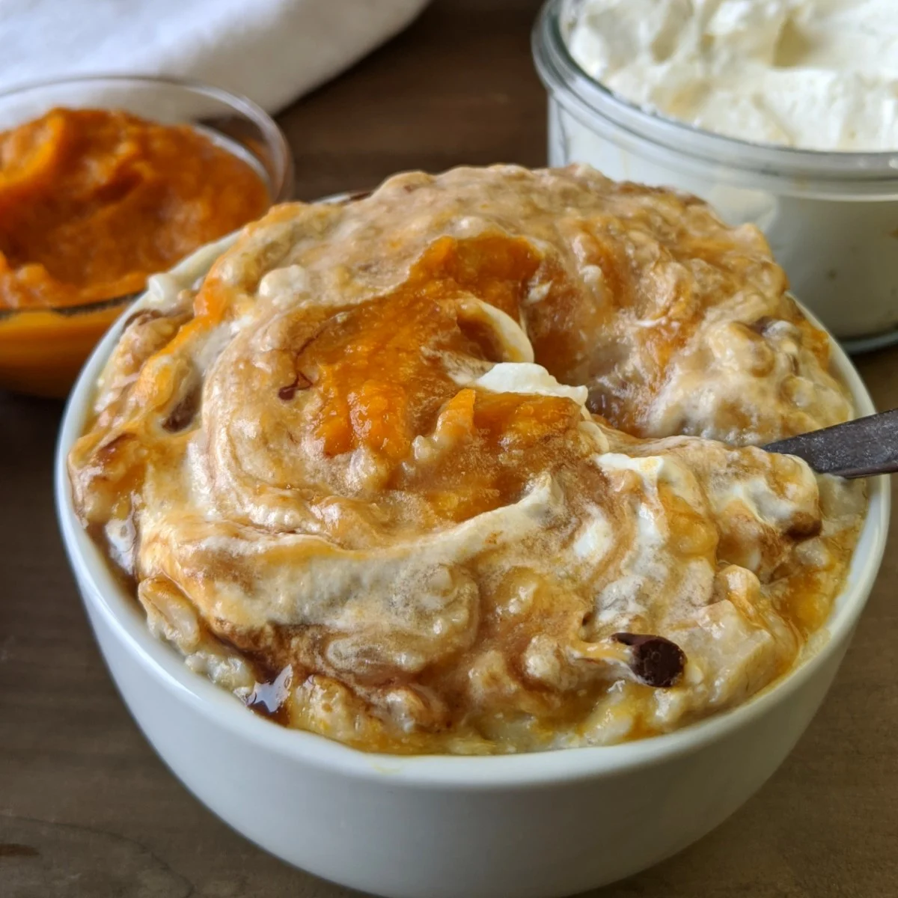

Pumpkin Pie Proats - BROtein Meals
Pumpkin Pie Proats

"Feeling autumn weather? Warm up (YOUR BENCHPRESS) by getting a taste of this!"
Ingredients:
- 1/3 cup rolled oats
- 2/3 cup water
- 2 medium egg whites
- 1/3 cup canned pumpkin
- 1 tablespoon whipped cream
- 1 tablespoon semi sweet chocolate chips
Steps:
- Cook oats in the microwave with water for one minute, or on the stovetop until liquid is absorbed (about 3 minutes)
- Remove from microwave to stir and cool for 1-2 minutes. If cooking on the stove, turn the heat to low.
- In a small bowl, whisk 2 egg whites together. (no yolk!). Slowly stir the egg whites into the cooked oatmeal. Whisk continuously until it's creamy and well mixed.
- Add the pumpkin and whisk to blend with the oats and egg whites.
- Return to the microwave and cook for 30 seconds longer, or continue on the stovetop for 1 more minute.
- Top with whipped cream and chocolate chips!